AI Academy · Level 1 · Grade 6 · Week 1 · Student lesson
AI or Not?
Learn to understand, design, build, test and explain AI systems responsibly.
Project: Helpful Classroom Sorter
Before you start
Separate something observed from an explanation: a device speaks; its mechanism is unknown.
Plan time to read, investigate and explain. Keep predictions separate from observations.
Student lesson · 1 of 16
Your mission
Your learning target
I can distinguish an observed result from an explanation of how it was produced.
I can identify written rules, learned models and human decisions inside one product.
I can explain what additional evidence is needed when a mechanism is unknown.
Remember before reading
Close your notes first. A rough first answer helps us choose the right starting point; it is not a score for your ability.
A classroom clock speaks the time. Write one thing you observed and one thing you cannot determine just from hearing it.
After trying, check the relevant lesson or ask your teacher. Change the part of your explanation that the evidence shows was wrong.
Look for evidence of how the system reasons or learns, not just its label or screen.
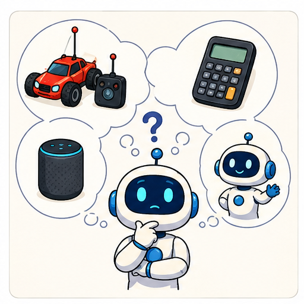
Learner name:
Readiness for the connected explanation
A classroom clock speaks the time. Write one thing you observed and one thing you cannot determine just from hearing it.
This week’s end goal
By the end, I can separate a learned prediction, a written rule and a human decision.
Student lesson · 2 of 16
Notice the evidence
PICTURE STORY
Look Closely Before You Explain
Pictures give clues; evidence tells us what the clues mean.

What do you notice?
Name three visible details without explaining them yet.
Circle the detail most connected to the system's decision.
Name one detail that may be decoration or distraction.
Make a first prediction and state the clue that supports it.
My observations, prediction, and evidence:
A closer explanation
The school bus display says DELAY 12 MINUTES in red. Leila calls it AI because it predicted the delay. Arun calls it a simple rule because the number turned red. Both have noticed a real part of the product, but neither has explained the whole system. To investigate, ask which decision you are talking about and what evidence reveals how that decision was made.
An output is what a system produces. A mechanism is how it produces that output. Seeing a red number establishes its colour; it does not reveal where the number came from. Similar outputs can come from different mechanisms, and one product can contain several mechanisms.
For this lesson we have an engineering note: the delay estimator was fitted using records of earlier bus journeys; a person wrote the colour instruction; and the driver can replace the message. These are supplied facts for our classroom case. In a real investigation, we would need trustworthy documentation, a demonstration of the process or another source of mechanism evidence.
Student lesson · 3 of 16
See how it works
VISUAL MECHANISM
Input → Process → Output
Follow the information instead of imagining magic inside the machine.
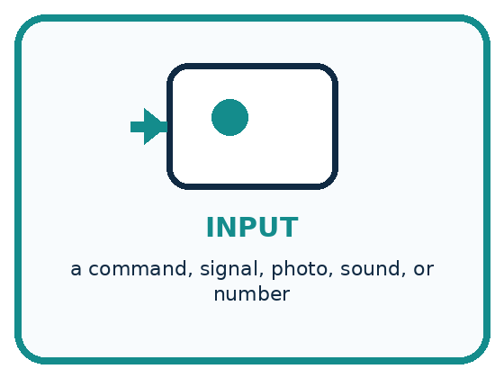
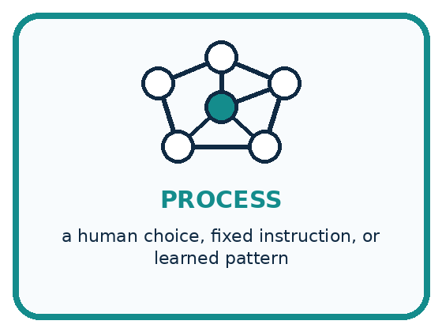
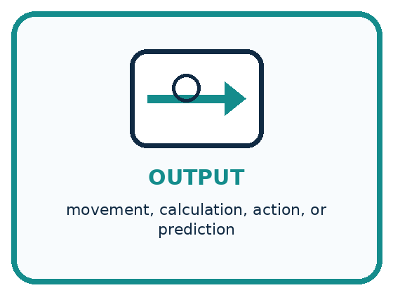
INPUT a command, signal, photo, sound, or number
PROCESS a human choice, fixed instruction, or learned pattern
OUTPUT movement, calculation, action, or prediction
Draw a fresh example with all three stages:
A closer explanation
The bus display contains three mechanisms
In the first row, fitting means adjusting a model using examples. Applying the fitted model to a new journey is a different step. The model can produce an incorrect estimate even if it was trained carefully. In the second row, a written threshold compares the estimate with 10. It can follow its instructions perfectly while using a bad estimate. In the third row, a person makes the message decision.
AI is a broader field than learning from examples. It also includes approaches that represent knowledge and reason with rules. Therefore, do not use the shortcut that every rule is non-AI. In this case, a simple colour switch is ordinary automation; identifying that switch does not classify every other part of the bus system.
Connect the picture and the explanation
Point to the input, the deciding step and the result in this week’s visual. Explain the same step in ordinary words. A picture helps when you can say what each part represents.
Student lesson · 4 of 16
Compare the cases
PICTURE GALLERY
Four Cases, Four Clues
Use the visual cue, then read the evidence carefully.
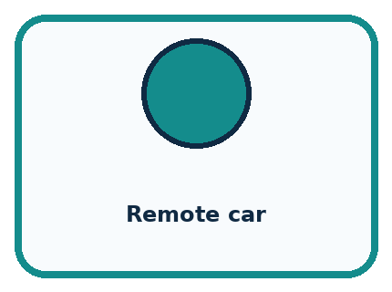
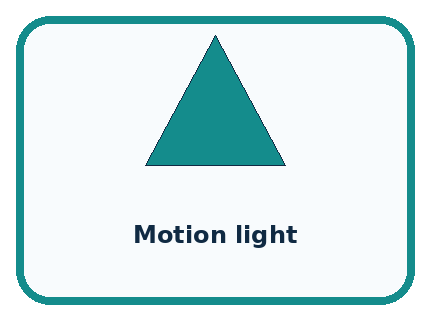
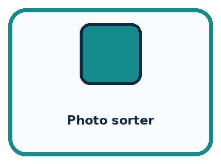
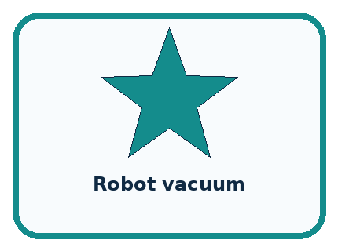
CASE 1 — Remote car Clue: person sends each steering command. Meaning: human-controlled.
CASE 2 — Motion light Clue: written if-motion-then-light rule. Meaning: fixed automation.
CASE 3 — Photo sorter Clue: trained model predicts a new label. Meaning: AI-based.
CASE 4 — Robot vacuum Clue: description hides the mechanism. Meaning: not enough information.
Which two pictures are easiest to confuse? What evidence separates them?
Change one thing in the pictured case
Change: Keep the forecast but raise the display boundary to 80%.
Prediction: The display no longer says TAKE ONE.
Reason: 70 is below 80; changing a display rule does not refit the model.
Student lesson · 5 of 16
Words that unlock the idea
VOCABULARY
Words You Can See and Use
The badge is a memory cue; the definition does the real thinking work.
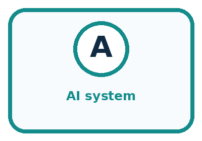
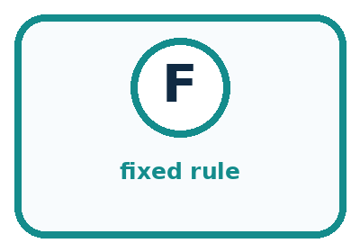
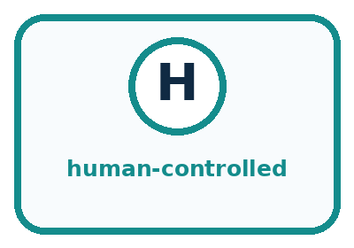
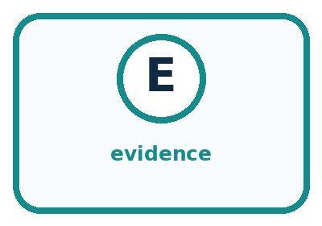
| Word | Meaning | My example |
|---|---|---|
| AI system | a system using learned patterns or symbolic reasoning | |
| fixed rule | an instruction written in advance | |
| human-controlled | a person makes the important choice | |
| evidence | a clue that supports or changes a claim |
Misconception detective
CLAIM TO REPAIR Every robot uses AI.
Use one vocabulary word and one piece of evidence to repair it:
Words used in the closer explanation
| Word | Meaning |
|---|---|
| Mechanism | The process that produces a result |
| Written rule | An instruction specified by a person before the system applies it |
| Learned model | A system whose adjustable values were fitted using examples |
| Hybrid system | A product that combines more than one kind of process |
Student lesson · 6 of 16
Follow a worked example
WORKED EXAMPLE
Watch the Reasoning, Not Just the Answer
Every step connects a claim to observable evidence.

STEP 1 — OBSERVE a command, signal, photo, sound, or number
STEP 2 — TRACE a human choice, fixed instruction, or learned pattern
STEP 3 — CONCLUDE movement, calculation, action, or prediction
What new evidence could change this answer?
A closer explanation
Question: Does the red display prove that a learned model was used? First separate the claim from the observation. The observation is that the displayed number is red. The claim concerns the process that produced the number. Next find relevant evidence. The engineering note says earlier journeys were used to fit the delay estimator. That note supports a learned-model classification for the estimator. The red colour alone does not.
| Claim | Relevant evidence | Conclusion |
|---|---|---|
| The estimator uses a learned model | The note describes fitting on past journeys | Supported for the estimator |
| The red colour proves learning | Only the displayed colour is observed | Not supported by colour alone |
| The driver override is a model prediction | A driver selects the replacement message | Contradicted in this case |
A strong answer states its limit: I can identify these three mechanisms from the supplied note, but I cannot infer the model's accuracy from one estimate. Even if the bus arrives exactly 12 minutes late, one success does not establish that the estimator will always work.
Learn from the worked case
Cover the result before checking it. Say what is given, choose the procedure, and follow one step at a time. Then uncover the result and explain your first mismatch. Ask why a step is allowed, not only what number it produces.
A pictorial worked case: AI or Not?
A fictional school umbrella display shows TAKE ONE before lunch. What produced that advice?
The facts we will use
A weather model was fitted on earlier weather records; its forecast is 70% rain.
A written rule shows TAKE ONE at rain forecasts of 60% or more. The teacher decides whether to distribute umbrellas.
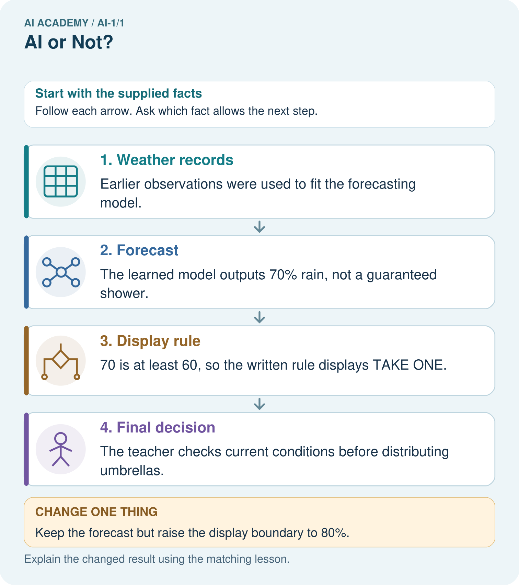
Read the picture one step at a time
Why this result follows
The fitting record supports calling the forecasting stage learned. Comparing 70 with 60 is an explicit rule. The final action belongs to a person. Merely seeing TAKE ONE would not reveal any of these mechanisms; the process notes supply that evidence.
What this example does not establish
A correct rule comparison does not establish that rain will occur or that 70% forecasts are followed by rain on about 70 out of 100 comparable days.
Read the labelled picture: Point to the learned stage. Does the changed display prove the weather forecast changed?
Change one thing: Keep the forecast but raise the display boundary to 80%. Predict the result before checking the explanation. What remains the same?
Student lesson · 7 of 16
Find and repair a mistake
COMPARE
Same Result, Different Reason
A comparison helps reveal the true concept boundary.
| Case | Evidence | What it shows |
|---|---|---|
| Remote car | person sends each steering command | human-controlled |
| Motion light | written if-motion-then-light rule | fixed automation |
| Photo sorter | trained model predicts a new label | AI-based |
| Robot vacuum | description hides the mechanism | not enough information |
Repair two tempting claims
CLAIM A Every robot uses AI.
Repair:
CLAIM B Anything with a screen is AI.
Repair:
A closer explanation
A robot vacuum is advertised as smart. The advertisement tells you almost nothing about its decisions. A useful question is not Does it look intelligent? Ask instead how it selects a route, whether adjustable values were fitted using examples, or when a person supplies a command. It may combine several answers.
Sometimes the honest conclusion is that the mechanism is unknown. That is a precise answer when you identify the missing evidence. It is weaker to guess a mechanism and then treat your guess as a fact. Keep observations, supplied evidence and assumptions separate in your investigation.
Student lesson · 8 of 16
Practise together
GUIDED PRACTICE
Try It, Check It, Explain It
Use support now so you can succeed independently later.

Explain how the picture story demonstrates this idea: Look for evidence of how the system reasons or learns, not just its label or screen.
Use a fresh example to explain AI system.
Trace a new input → process → output example.
Find and repair the error in: Anything with a screen is AI.
Invent one edge case and name the safe response.
A closer explanation
A photo library predicts whether a picture contains a bicycle using a model fitted to labelled pictures. A written rule places all bicycle predictions in one album. The owner can move any photo to a different album. Complete the explanation in your workbook: the prediction stage is ___ because ___; the automatic album step is ___ because ___; the manual move is ___.
If a photograph lands in the wrong album, do not immediately blame the written album rule. The prediction might have been wrong, the album rule might have been implemented incorrectly, or a person might have moved the photo. Inspect the intermediate prediction and the action record to distinguish these causes.
Practise with less help: Complete the photo library explanation
Use workbook W2 for the connected example “Evidence and decision mechanisms”. First fill the input and rule boxes. Try the middle steps before asking for a hint. After a hint, try the next step yourself.
| Plan | Do | Check |
|---|---|---|
| What is given? Which rule or procedure applies? | Record each intermediate step. | Does the result follow? What remains unknown? |
Explain your trace to a partner. Your partner points to one step to check. Swap roles on the next case. Each person writes their own explanation.
Check your reasoning
Use the worked case for Evidence and decision mechanisms. Proposed explanation: “All rules are outside AI”. Decide whether this explanation is supported. Point to the step or supplied fact that decides; explain your repair if needed.
Answer on your own before discussion. If you are unsure, say which step you need help with.
Explain the picture
Point to the learned stage. Does the changed display prove the weather forecast changed?
This is supported practice. Keep the separately named independent case for an attempt before feedback.
Student lesson · 9 of 16
Run the investigation
EXPLORER LAB
Device Detective Sort
Predict first, test honestly, and explain what the evidence means.
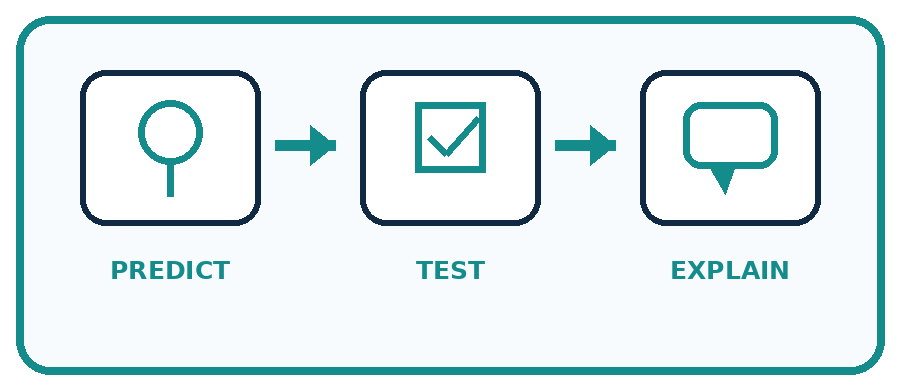
State your prediction before the result is known.
Complete the task: Sort six devices by mechanism and defend two borderline cases.
Keep a normal case and an edge case clearly separated.
Record what happened—even when it does not match your prediction.
Explain the result, one limitation, and the next useful test.
| Case | Prediction | Observed result | What it means |
|---|---|---|---|
| Normal | |||
| Edge |
Plan → try → check
Before trying: what do I expect, and why? While trying: which step could first go wrong? Afterwards: what did I actually observe, and what should change? Keep “not run” if you only traced the procedure.
Student lesson · 10 of 16
Build your understanding
PRACTICE LADDER
Climb from Recall to Defense
Each step asks for a stronger kind of understanding.
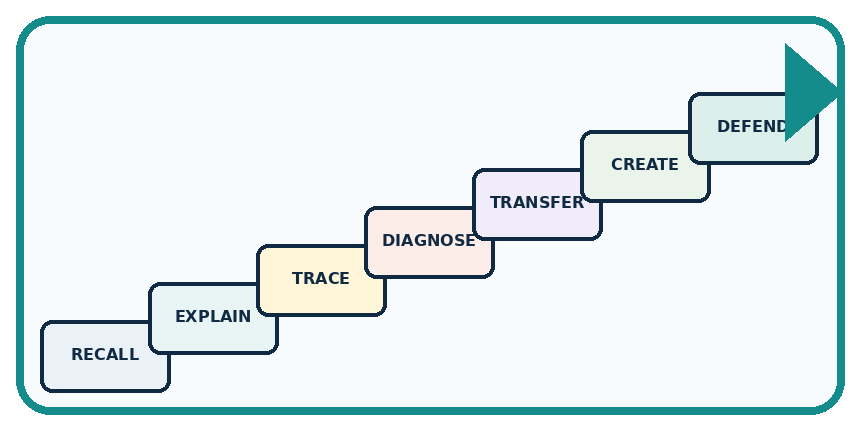
RECALL Define AI system.
EXPLAIN Look for evidence of how the system reasons or learns, not just its label or screen.
TRACE Show the input, process, and output.
DIAGNOSE Repair: Every robot uses AI.
TRANSFER Apply the idea to a new home or classroom case.
CREATE Design one revealing test.
DEFEND Give a claim, evidence, mechanism, limit, and safe action.
Student lesson · 11 of 16
Connect your project
PROJECT
Helpful Classroom Sorter
Build one coherent system across the year, one evidence-based decision at a time.
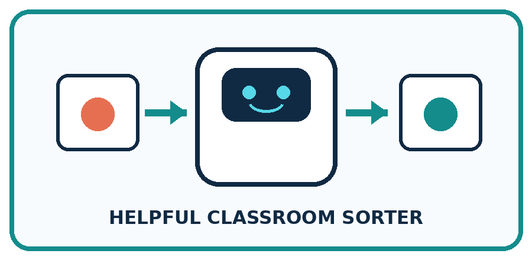
What real classroom need does this serve?
What information is necessary—and what should stay private?
What happens inside the process?
What normal and edge cases will you test?
When should it say not sure or ask a person?

My project decision:
Evidence for your project
For the Helpful Classroom Sorter, annotate which decisions follow written instructions and which, if any, were fitted from examples.
Student lesson · 12 of 16
Show what you know
MASTERY
Fresh-Case Independent Proof
Complete this after teaching and guided practice have ended.
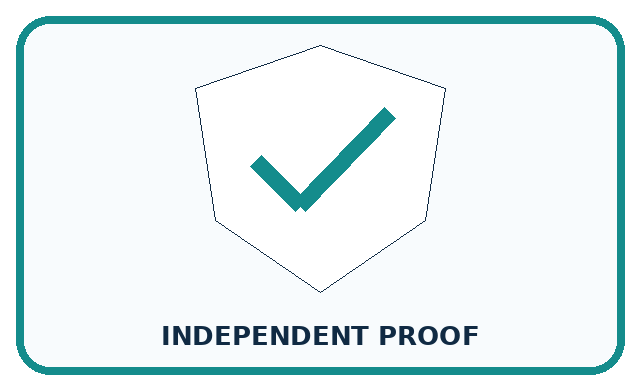
□ Name or draw the fresh case.
□ Trace input, process, and output.
□ State the conclusion and strongest evidence.
□ Name one limit, failure, missing clue, or fairness/privacy concern.
□ Explain one safe next action or improvement.
Independent evidence:
My level: □ Not yet □ With one hint □ Independently □ I can teach it
Student lesson · 13 of 16
Study a complete case
Week 1 Worked case
Use the supplied details to practise the weekly concept before attempting the independent question. This case extends the illustrated lesson.
The situation
Six devices are a motion-triggered lamp, a trained photo sorter, a remote-controlled car, a calculator, an unspecified smart speaker and an unspecified robot vacuum.
The question
Classify all six using mechanism evidence. Which two need more information?
Worked explanation
The lamp uses a fixed rule; the photo sorter uses a learned model; the car follows human commands; the calculator performs arithmetic. The speaker and vacuum need mechanism details. Products can combine mechanisms. A robot body or smart label proves none of them.
Explain it in your own words
Which detail supports the answer, and why does it matter?
Scope note: this course mainly studies learning from examples. AI also includes symbolic and rule-based approaches. Ask how a system reasons or learns; a robot body or a simple automatic switch is insufficient evidence.
Trace the supplied case visually
Find the decision maker
| Evidence or stage | Value or result |
|---|---|
| Motion lamp | Written rule |
| Photo sorter | Learned from examples |
| Remote car | Human command |
| Smart speaker | Need more information |
Six devices are a motion-triggered lamp, a trained photo sorter, a remote-controlled car, a calculator, an unspecified smart speaker and an unspecified robot vacuum.
Classify all six using mechanism evidence. Which two need more information?
The lamp uses a fixed rule; the photo sorter uses a learned model; the car follows human commands; the calculator performs arithmetic. The speaker and vacuum need mechanism details. Products can combine mechanisms. A robot body or smart label proves none of them.
Student lesson · 14 of 16
Try a new case independently
Independent case: Investigate a new hybrid system
A school greenhouse estimates tomorrow's temperature using a model fitted on historical weather. A written rule displays CHECK PLANTS above 30 degrees C. A caretaker chooses whether to open a vent. Identify each mechanism and explain why a correct CHECK PLANTS message would not prove an accurate temperature prediction.
Attempt this case before feedback. Record any help. Earlier examples below are further practice; a case already practised with feedback cannot establish fresh transfer.
Week 1 Independent application
Close the worked explanation. Apply the idea to this different question without copying.
A toy follows your steering buttons. A photo app learned from labelled pictures. A talking clock follows a written timetable. Which uses a learned model? What evidence supports each classification?
My answer, with a trace, calculation or supporting evidence
Create and test
Change one relevant detail. Predict the result before testing. Include a boundary or missing-information case when it helps reveal a limit.
My changed input and expected result
Connect to your project
Choose whether the Helpful Classroom Sorter needs a person, fixed rule, or learned model; justify the smallest safe solution.
The evidence I will keep
Your teacher has the independent answer and scoring criteria. Complete the matching workbook week to keep your practice evidence together.
Transfer practice from the original programme
A bus displays a delay prediction learned from past journeys. A written rule turns the display red above 10 minutes. A driver can override the message. Identify all three mechanisms. Would seeing a red display prove that learning occurred?
Use feedback to improve
Attempt the independent case before hints. Record whether you worked alone, used a hint or followed a model. After feedback, fix the first unsupported step and explain why it changed. A later check uses a changed case, not a copied answer.
Student lesson · 15 of 16
Your lesson route
Start with this question: A fictional school umbrella display shows TAKE ONE before lunch. What produced that advice?
| By the end, I can | How I will show it |
|---|---|
| Distinguish an observed result from an explanation of how it was produced | Explain the deciding step, show a trace or test, and state one limit. |
| Identify written rules, learned models and human decisions inside one product | Explain the deciding step, show a trace or test, and state one limit. |
| Explain what additional evidence is needed when a mechanism is unknown | Explain the deciding step, show a trace or test, and state one limit. |
Remember → watch and explain → try with help → investigate → try independently → keep project evidence. Your teacher may spread this lesson across several classes.
Keep your first prediction. Compare it with what the evidence shows and explain any change.
Student lesson · 16 of 16
Finish and return
Close your notes. Explain this goal in your own words: Distinguish an observed result from an explanation of how it was produced
If you are unsure, return to the worked picture and explain one arrow. If you are ready, change an input or assumption and justify your prediction.
Save your workbook evidence. At the next review, try a different case before opening your old answer.